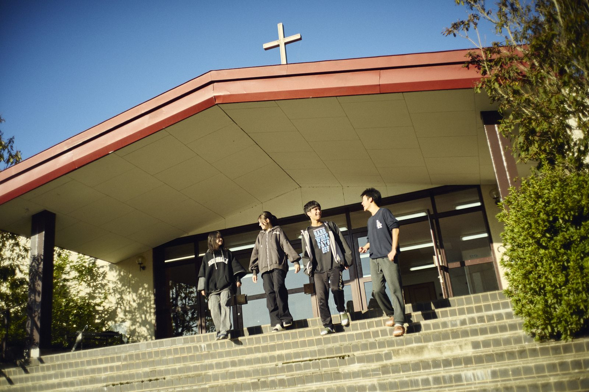
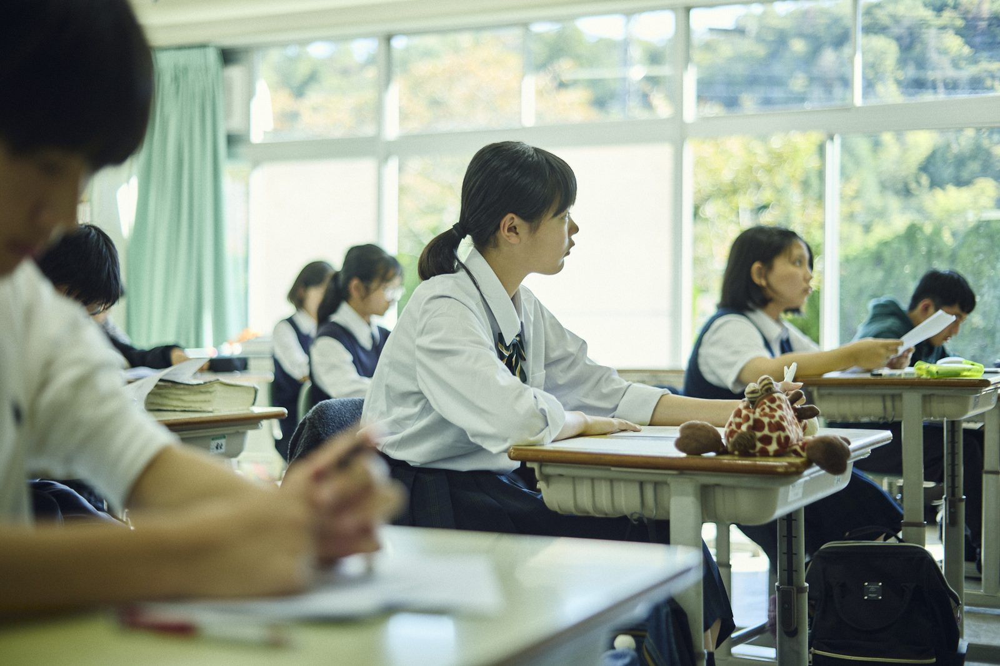
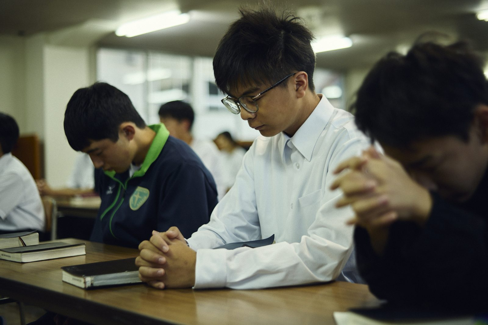
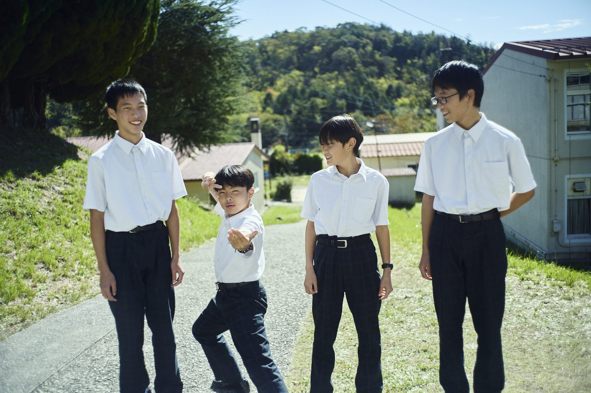

人を、まるごと育てる。
PHILOSOPHY ｜ 教育理念自分は神様から愛されている存在だと知ること。それが、他者を自分のように愛することにつながります。キリスト教の教えを土台に、「他者のために生きる」人を育ててきました。

Do for Others in Christ
神と人に仕える人物に
広島三育学院は、1926年の日本三育学院の開校当初から「隣人を自分のように愛しなさい」というキリスト教の教えを土台にしてきました。寮での朝晩の礼拝、必修授業の「聖書」、土曜日の安息日。学校生活の中に、聖書の言葉に触れ、心を落ち着かせる時間があります。
「だから、何事でも人々からしてほしいと望むことは、人々にもそのとおりにせよ」
マタイによる福音書 7章12節人の中に創造主のみかたちを回復するという使命に従い、身体性、精神性、霊性、社会性の調和ある開発を行い、与えられた生涯の全期間にわたって、神に仕え人に奉仕する人物となることを目標とする。
理念の源流｜エレン・G・ホワイト『教育』（1903）
“[True education] is the harmonious development of the physical, the mental, and the spiritual powers.”
真の教育とは、身体・知性・霊性の調和のとれた発達である。（Education, p.13）
4つの品性を、統合的に開発する。

INTELLECT知性
問いを立て、動かす力。正解のない時代に、自分で問いを見つけ、考え、社会に働きかける力。
 BODY
BODY身体性
生命を感じ、つくる力。土を触り、食を作り、自然の中で全身で学ぶ。画面の外にある本物の体験。

SPIRIT霊性
根っこを育てる力。すでに受け取っているという贈与感覚を土台に、なぜ生きるかを問い続けるブレない軸をつくる。

SOCIETY社会性
共に生き、共に変える力。多世代・多様な他者と寝食を共にし、他者のために生きることを内側から選べる力。
カリキュラムの柱は、信仰と学びと経験の統合（IFLL：The Integration of Faith, Learning and Life）です。
半世紀分の卒業生が、
いま全国・全世界で歩んでいる。
本校の始まりは1898年、セブンスデー・アドベンチスト教会の宣教師W.C.グレンジャーが東京・芝に創立した芝和英聖書学校にさかのぼります。1926年、千葉県房総半島の松林の丘に、教師と生徒の手で「日本三育学院」を建設。戦時中は信仰と平和思想のために学校閉鎖の苦難を経ましたが、終戦とともに再開しました。1977年、中学校と高校は広島県大和町に移転。2027年に広島での開校50周年を迎え、この地で次の半世紀へと歩みを進めています。
- 1898芝和英学校 設立
- 1926日本三育学院（千葉県）開校
- 1977広島に移転、広島三育学院小学校・中学校・高等学校 開校
- 1984第1回クリスマス演奏旅行
- 2002国際英語コース 開設
- 2013数理科学コース 開設
- 2021制服を27年ぶりにリニューアル
- 2023中高寮統合、ソーシャルアントレプレナープロジェクト「ソアン」始動
- 2025関西万博のステージに中学校聖歌隊が出演
- 2027広島開校50周年
世界に広がる、アドベンチスト教育。
国内には千葉・広島・沖縄の3つの中等教育キャンパス、4つの幼稚園、10の小学校、1つの大学。三育教育グループは、全世界に広がる学校ネットワークの一員です。
世界のアドベンチスト教育機関数（2024年4月現在）
読むだけでは、三育はわからない。
ひとつでも気になったら、一度キャンパスへ。見学も、宿泊体験も、相談だけでも大丈夫です。